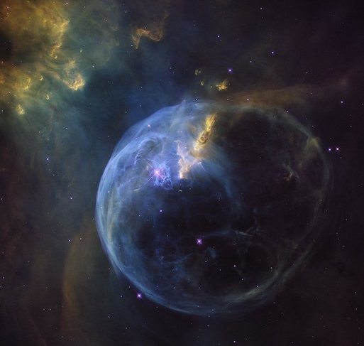
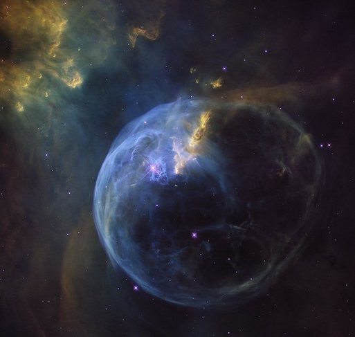
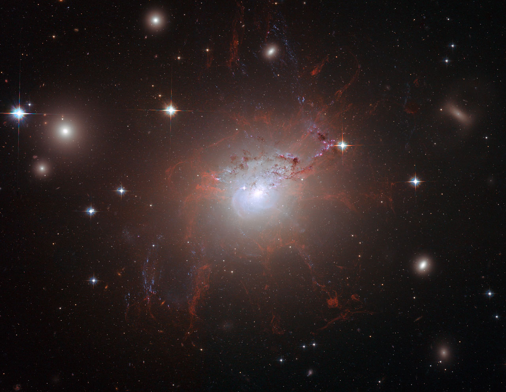

Nebulas
2025-06-22 00:00:00 +0200
NGC 2020, NGC 2014, NGC 7635
A nebula (plural: nebulae or nebulas) is a vast, diffuse cloud of gas and dust in space. The word “nebula” comes from the Latin word for “mist” or “cloud,” which accurately describes their often ethereal and hazy appearance when viewed through telescopes.
Nebulae are fundamental to the life cycle of stars and play various roles in the universe:
Stellar Nurseries (Emission Nebulae): Many nebulae are “stellar nurseries,” regions where new stars are born. These are often called emission nebulae because the gas (primarily hydrogen) within them is heated and ionized by the intense ultraviolet radiation from hot, young stars forming within or nearby. This causes the gas to glow, creating beautiful, colorful displays like the Orion Nebula. Gravity pulls clumps of dust and gas together within these cold, dense molecular clouds, eventually leading to the collapse that forms protostars.
Reflection Nebulae: These nebulae don’t emit their own light but instead reflect the light from nearby stars. They are typically made of dust that scatters the starlight, giving them a characteristic blue hue, as seen in the Pleiades star cluster.
Dark Nebulae (Absorption Nebulae): These are dense clouds of dust and gas that are so thick they block out the light from stars or other nebulae behind them, appearing as dark, silhouetted patches against a brighter background. The Horsehead Nebula is a famous example. Despite their dark appearance, these are often also sites of future star formation.
Planetary Nebulae: These are not related to planets! They are formed at the end of a low-to-intermediate mass star’s life (like our Sun will eventually become). As the star runs out of fuel, it sheds its outer layers into space, forming an expanding shell of glowing ionized gas around the dying stellar core (which becomes a white dwarf). They get their name from their often round, planet-like appearance through early telescopes.
Supernova Remnants: These are the spectacular remains of massive stars that have exploded in a supernova. The explosion blasts stellar material outwards at incredible speeds, creating expanding shells of gas and dust that continue to glow from the energy imparted by the supernova. The Crab Nebula is a well-known example of a supernova remnant.
Nebulae are immense in size, often spanning hundreds of light-years, yet they are incredibly diffuse, meaning the density of matter within them is far less than any vacuum we can create on Earth. They are among the most visually stunning objects in the night sky and offer crucial insights into the processes of star birth, stellar evolution, and the recycling of matter in the cosmos.
 

This image, captured by the NASA/ESA Hubble Space Telescope, is a prime example of the turbulent stellar nurseries it has observed throughout its 30-year operational life. It beautifully portrays the magnificent NGC 2014 nebula and its adjacent NGC 2020, which collectively contribute to an expansive star-forming region within the Large Magellanic Cloud – a satellite galaxy of our Milky Way, roughly 163,000 light-years away.
The Bubble Nebula (NGC 7635), an emission nebula located 8,000 light-years from Earth, is showcased in this stunning new image. The NASA/ESA Hubble Space Telescope observed this view as a celebration of its 26 years in space.
Magnetic Monster
2025-06-22 00:00:00 +0200
NGC 1275
In July and August 2006, the NASA/ESA Hubble Space Telescope’s Advanced Camera for Surveys captured a truly stunning image of NGC 1275. This detailed view provided an unprecedented look at the galaxy’s fragile, reddish filamentary structures, which appear as a lacy network around the bright central galaxy. Remarkably, these filaments remain cool despite being enveloped by gas that is a scorching 55 million degrees Celsius. Their structure is maintained by an encompassing magnetic field, which also demonstrates the transfer of energy from the central black hole to the surrounding gas.

Based on these filamentary observations, astronomers were, for the very first time, able to estimate the magnetic field’s strength. This allowed them to show how these extragalactic fields have preserved the filaments’ integrity for 100 million years against the dual threats of gravitational forces and the violent cluster environment. Hubble’s sharp vision was so precise that astronomers could differentiate individual threads within the filaments, distinguishing features as narrow as 200 light-years, even though the filaments themselves stretch for an astonishing 200,000 light-years across an image spanning approximately 260,000 light-years. The scene is completed by striking lanes of dust from a separate spiral galaxy, disrupted by the cluster’s tidal forces, and vibrant blue filaments indicative of newly formed stars.
Jupiter
2025-06-22 00:00:00 +0200
Jupiter - A Glimpse into the Giant’s Turbulent Heart
Jupiter, the largest planet in our solar system, is a true behemoth, dwarfing all other planets combined. Classified as a gas giant, it’s primarily composed of hydrogen and helium, lacking a solid surface like Earth. Its colossal size and rapid rotation create powerful atmospheric phenomena, most notably the iconic Great Red Spot—a persistent, colossal storm larger than Earth that has raged for centuries. The planet’s colorful, swirling bands are testament to its turbulent weather systems, driven by immense internal heat and powerful jet streams that define its majestic and ever-changing appearance.
Beyond its striking visual characteristics, Jupiter plays a crucial role in shaping our solar system. Its immense gravitational pull acts as a cosmic vacuum cleaner, deflecting or capturing many comets and asteroids that might otherwise pose a threat to the inner planets, including Earth. This protective influence is a key factor in the stability of our planetary neighborhood. Furthermore, Jupiter possesses a vast and diverse system of moons, with over 90 confirmed. Among these, the four largest — Io, Europa, Ganymede, and Callisto (known as the Galilean moons) — are worlds unto themselves, each presenting unique scientific curiosities, from Io’s intense volcanic activity to Europa’s tantalizing subsurface ocean.
Studying Jupiter provides invaluable insights into planetary formation and the dynamics of gas giants, both within and beyond our solar system. Missions like NASA’s Juno spacecraft have been instrumental in probing its deep atmosphere, magnetic field, and internal structure, revealing complexities that challenge existing models. The ongoing exploration of Jupiter and its moons continues to push the boundaries of our understanding of planetary science, offering tantalizing clues about the potential for life in extreme environments and the fundamental processes that govern the evolution of planetary systems across the cosmos.

The NASA/ESA Hubble Space Telescope’s recent image of Jupiter, taken on August 25, 2020, from a distance of 653 million kilometers, is providing researchers with fresh insights into the monster planet’s dynamic weather. Noteworthy features in this sharp view include a remarkable new storm, another instance of the Great Red Spot’s “cousin” changing color, and a clear depiction of Jupiter’s icy moon Europa.
Eagle
2025-06-22 00:00:00 +0200
Eagle Nebula
Resembling a majestic, winged figure, this cosmic structure is, in fact, a towering column of frigid gas and dust emerging from the heart of the Eagle Nebula, a stellar nursery. This impressive pillar stretches 9.5 light-years high, equivalent to approximately 90 trillion kilometers, or roughly twice the distance between our Sun and its nearest stellar neighbor.
Within the chaotic environment of the Eagle Nebula, where the intense energy from young stars sculpts fantastical landscapes, stars are born from cold hydrogen gas clouds. This towering structure may serve as a massive incubator for these nascent stars. However, a powerful torrent of ultraviolet light emanating from a cluster of hot, massive young stars (located beyond the image’s top edge) is actively eroding the pillar, simultaneously illuminating its rugged surface. Wispy streamers of gas are seen “boiling off” this surface, contributing to the hazy appearance around the structure and emphasizing its three-dimensional form, all silhouetted against the softer glow of more distant gas.
The dark hydrogen cloud at the very top of the tower exhibits remarkable resistance to this erosion, much like dense brush resisting a prairie fire. The intense ultraviolet light, like fire, rapidly consumes the less dense surrounding gas but slows its destructive path when encountering these thick pockets of hydrogen gas and dust, allowing them to endure longer. It’s within these resilient gaseous confines that new stars are believed to be forming, some perhaps from the gravitational collapse of dense gas, while others may be spurred into existence by pressure from gas heated by the nearby luminous stars.

Indeed, the first generation of stars might have begun forming even before the massive star cluster unleashed its scorching light. These early stellar births likely occurred as denser regions of cold gas within the tower succumbed to their own gravity. The visible bumps and finger-like protrusions in the tower’s center are prime examples of these stellar birthing grounds. Though seemingly small, these areas are roughly the size of our own solar system. These fledgling stars’ growth was abruptly halted when the intense light from the star cluster dissipated their protective gaseous cradles, cutting off their essential gas supply.
Ironically, the same intense starlight from the young cluster may also be catalyzing star formation in other parts of the tower. This phenomenon is evident in the large, glowing clumps and finger-shaped outgrowths at the structure’s apex. The starlight is thought to heat the gas at the tower’s top, creating a shock front – visible as a bright rim along the nebula’s upper-left edge. As this heated gas expands, it acts like a powerful ram, compressing the cooler, darker gas ahead of it. This intense pressure facilitates the conditions necessary for new stars to form, a process that may continue as the shock front gradually advances down the tower. The striking colors in the image result from gas energized by the cluster’s potent ultraviolet light, with the blue hues at the top indicating glowing oxygen and the red in the lower region originating from glowing hydrogen. This particular image of the Eagle Nebula was captured in November 2004 using the Advanced Camera for Surveys aboard the NASA/ESA Hubble Space Telescope.
Butterfly
2025-06-22 00:00:00 +0200
NGC 6302
While it may resemble a delicate celestial butterfly, NGC 6302, commonly known as the Bug or Butterfly Nebula, is anything but serene. Its seemingly fragile “wings” are in reality churning cauldrons of gas, superheated to nearly 20,000 degrees Celsius and expanding through space at an incredible speed exceeding 950,000 kilometers per hour – fast enough to cover the Earth-to-Moon distance in just 24 minutes. At the heart of this furious spectacle lies a dying star, once five times the mass of our Sun, which has shed its outer layers and now bombards the expelled material with ultraviolet radiation, causing it to brilliantly glow. This celestial marvel is a prime example of a planetary nebula, a term historically applied due to their often spherical appearance through smaller telescopes.
The Wide Field Camera 3 (WFC3), a new instrument installed on the NASA/ESA Hubble Space Telescope in May 2009, during a crucial servicing mission, captured this stunning image of NGC 6302. Located roughly 3800 light-years away within our Milky Way’s Scorpius constellation, the nebula’s glowing gas comprises the star’s outer layers, ejected over approximately 2200 years. The “butterfly” itself stretches for more than two light-years, about half the distance to our nearest star, Proxima Centauri.
The central star remains hidden, enveloped by a doughnut-shaped ring of dust that appears as a dark band constricting the nebula’s center. This dense dust belt funnels the star’s outflow, creating the distinctive “bipolar” or hourglass shape seen in many planetary nebulae. Though the gas itself is an unusually hot 20,000 degrees Celsius, the hidden central star boasts an astonishing surface temperature of over 220,000 degrees Celsius, making it among the hottest stars known in our galaxy.
The WFC3 image unveils the star’s complex history of ejections. Initially a colossal red giant (about 1000 times our Sun’s diameter), it slowly shed its outer layers. Some gas left its equator at a relatively low speed (perhaps 32,000 km/h), forming the central dust ring. Subsequent, higher-speed ejections perpendicular to this ring created the elongated “wings.” As the central star further heated, a much faster stellar wind, traveling over 3.2 million km/h, then sculpted and refined the existing wing-shaped structure. The image also reveals numerous finger-like projections, indicating denser pockets of outflow that have resisted the stellar wind’s powerful pressure.
The nebula’s vibrant colors offer insights into its composition and dynamics. Reddish outer edges are primarily due to nitrogen emission, marking the coolest visible gas. WFC3’s diverse filters, designed to isolate light from various chemical elements, allow astronomers to determine the gas’s temperature, density, and composition. White-colored regions, rich in sulfur, highlight areas where fast-moving gas collides with slower, previously ejected material, generating powerful shock waves—visible as bright, crisp edges facing the central star, exemplified by the distinct white blob at the upper right. These Hubble observations of NGC 6302, captured on July 27, 2009, in ultraviolet and visible light using specific filters for oxygen, helium, hydrogen, nitrogen, and sulfur, were part of the Hubble Servicing Mission 4 Early Release Observations.

Whirlpool Galaxy
2025-06-21 00:00:00 +0200
M51
The majestic spiral galaxy M51 (NGC 5194), famously nicknamed the Whirlpool, is showcased in this exceptionally sharp image taken by the NASA/ESA Hubble Space Telescope’s Advanced Camera for Surveys in January 2005.
Its graceful, winding arms, appearing like a grand spiral staircase, are actually vast lanes of stars and gas interwoven with dust. This portrait vividly illustrates the galaxy’s grand design, from its star-forming outer arms populated by young stars to its yellowish, elder-star-filled central core.
The Whirlpool’s two distinct curving arms are its most striking feature, serving as efficient “star-formation factories.” This process begins with dark gas clouds on the inner edge, progressing through bright pink star-forming regions, and culminating in brilliant blue star clusters along the outer edge.